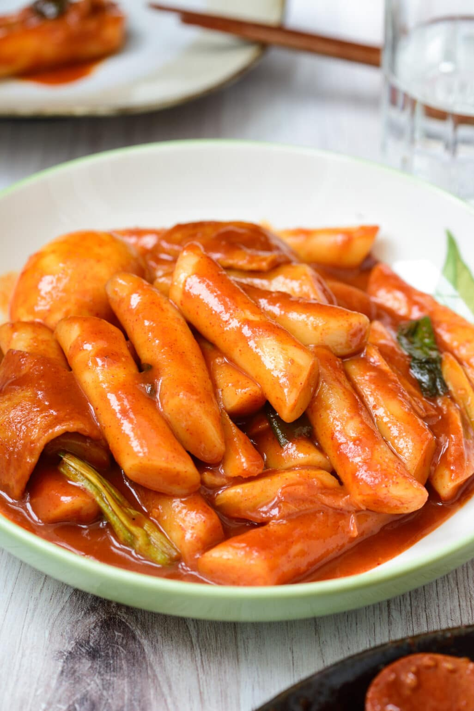

Back to the index page
Tteokbokki

Tteokbokki is a highly popular Korean street food and a delicious comfort food. You can make it at home with this easy tteokbokki recipe. The spicy, slightly sweet, and chewy rice cakes are simply addictive!
Ingredients
- 500grams of korean rice cake(tteok)
- 1 brown onion(optional)
- 1 spring onion(optional)
- 150grams of fish cakes
- any kind of noodle you like(optional)
Sauce
- 2 spoons of gochujang(korean chilli paste)
- 1 spoons of sugar
- 2 spoons of soy sauce
- 3 spoon of korean chill powder
- half spoon of curry powder
- 600mlof water
Steps
- Cut the onion and spring onion then stir fry them until the onion become transparent
- pour 600ml of water and put all the Ingredients for the sauce(order doesnt matter)
- put rice cakes and fish cakes
- put the noodles(if you have any) after 1 minutes after previous step
- let it cook for 2 more mintues
- Enjoy the food!